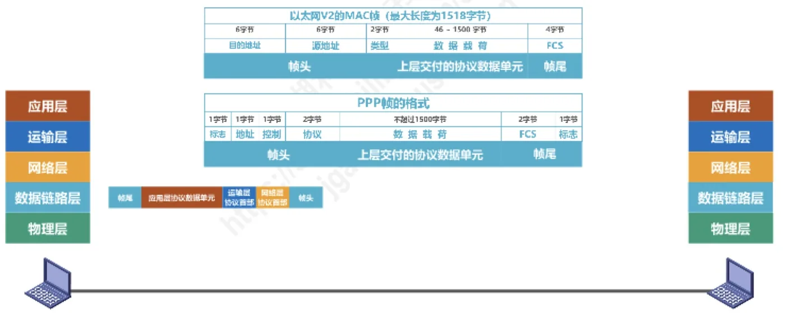
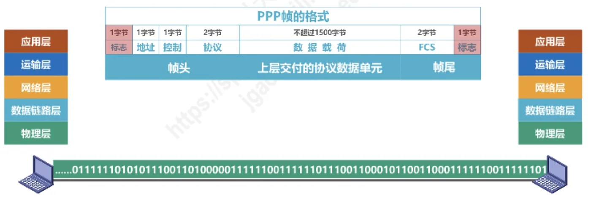
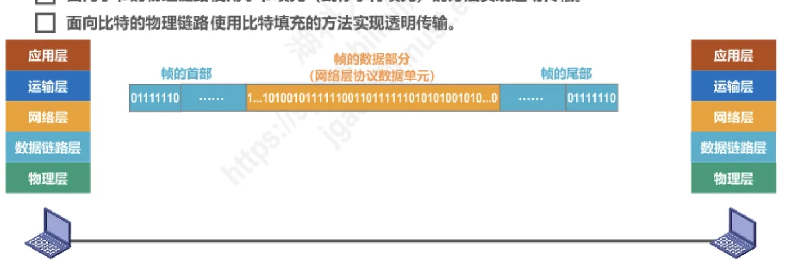
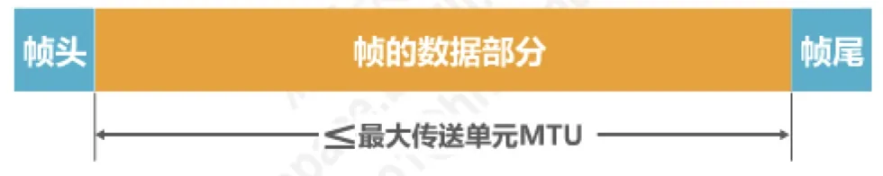

计算机通信与网络 · 第 3 章 数据链路层
3.2 封装成帧
物理层交给数据链路层的是连绵不断的比特流，接收方的数据链路层必须能从中切出一个个完整的帧——这就是封装成帧要解决的问题。本节依次讲三件事：帧头帧尾怎么加、靠什么划定帧的边界、数据里恰好出现与边界相同的比特组合时怎么办（透明传输），最后说明帧的数据部分为什么不能无限长。
1. 什么是封装成帧
封装成帧是指数据链路层给上层交付的协议数据单元添加帧头和帧尾，使之成为帧。帧头和帧尾中包含有重要的控制信息，例如地址、类型以及用于差错检测的检错码。
不同协议的帧格式不一样，但结构思路相同。以两种常见帧为例：
- 以太网 V2 的 MAC 帧：6 字节目的地址 + 6 字节源地址 + 2 字节类型 + 46~1500 字节数据载荷 + 4 字节 FCS，最大长度为 1518 字节；
- PPP 帧：1 字节标志 + 1 字节地址 + 1 字节控制 + 2 字节协议 + 不超过 1500 字节的数据载荷 + 2 字节 FCS + 1 字节标志。

2. 帧定界
接收方的数据链路层拿到的是物理层交付的一长串比特，它怎么知道哪些比特属于一个帧、哪些比特属于下一个帧？答案是：帧头和帧尾的作用之一就是帧定界。发送方在帧的开头和结尾放上含义明确的字段，接收方只要在比特流中搜寻这些字段，就能一段段地把帧切出来。
PPP 帧就是用首尾各一个字节的标志字段（取值为 01111110）来定界的：接收端在比特流中先找到第一个 01111110，认定「帧开始了」，再找到下一个 01111110，认定「帧结束了」，两者之间的内容就是这个帧的地址、控制、协议、数据和 FCS 字段。

以太网 V2 的 MAC 帧则不同，它的首尾没有标志字段，而是靠帧间间隔来界定：发送每个 MAC 帧之前先发 7 字节的前导码（10101010……）和 1 字节的帧开始定界符，让接收端把时钟对齐；一个帧发送完毕后，要留出帧间间隔（以太网规定为 96 比特时间）再发下一个帧，接收端就以这段时间的静默作为一帧的结束。
3. 透明传输
透明传输是指数据链路层对上层交付的传输数据没有任何限制，就好像数据链路层不存在一样。之所以要专门提出这一点，是因为帧定界会带来一个麻烦：如果上层交付的数据里恰好出现了与标志字段相同的比特组合，接收端就会把它误当成帧的结束标志，从而把一个帧误判成两个帧（或者丢掉后半部分数据）。
解决办法的原则是：发送方在数据中「插入」一些额外字符，接收方再准确无误地把它们删掉，从而保证数据部分原样传递。按物理链路面向字节还是面向比特，有两种做法。
（1）字节填充（字符填充）
面向字节的物理链路使用字节填充（或称字符填充）的方法实现透明传输：发送方在数据中出现的标志字节（flag）之前插入一个转义字符 ESC，接收方看到 ESC 后就知道转义字符后面的字节是数据，而不是标志，于是把这个 ESC 删除、把后面的字节当数据收下。如果数据中本来就有 ESC 这个字节，那就在它前面再插入一个 ESC，这样接收方就能分清哪个 ESC 是转义用的、哪个是真正的数据。
（2）比特填充
面向比特的物理链路使用比特填充的方法实现透明传输，最典型的是零比特填充法：发送方在数据中每出现 5 个连续 1 就在后面插入一个 0，这样数据部分里绝不会出现连续的 6 个 1，也就绝不会与由 0 1 1 1 1 1 1 0 构成的标志字段混淆；接收方每收到 5 个连续 1 就把后面的那个 0 删除，数据就恢复了原样。HDLC 协议采用的就是帧头帧尾的标志字段定界加零比特填充。

用原讲义的一个组帧过程走一遍零比特填充：HDLC 协议要处理的数据是 0111110001111110。其中第一段连续的 5 个 1 后面要插入一个 0；后面那段连续的 6 个 1 中，前 5 个 1 后面也要插入一个 0，填充后的数据部分成为 011111000011111010。HDLC 再在它的前后各加一个标志字段 01111110 作为帧定界符；接收方每遇到 5 个连续 1 就把后面的那个 0 删掉，数据就原样恢复为 0111110001111110。
4. 帧数据部分的长度上限 MTU
从提高效率的角度看，应当使帧的数据部分的长度尽可能大些——因为帧头、帧尾和发送前后的处理开销是固定的，数据越长，这部分开销所占的比例就越小。但考虑到差错控制等多种因素，数据部分也不能无限长：帧越长，一旦出错需要重传的数据就越多，出错的概率也越大。因此每一种数据链路层协议都规定了帧的数据部分的长度上限，即最大传送单元 MTU（Maximum Transfer Unit）。

本节小结
- 封装成帧就是给上层交付的协议数据单元加上帧头和帧尾使其成为帧，帧头帧尾中含有地址、类型、检错码等重要控制信息；
- 帧头帧尾的作用之一是帧定界：PPP 帧用首尾各 1 字节的标志字段 01111110 定界；以太网 V2 的 MAC 帧用 7 字节前导码和 1 字节帧开始定界符开头、用 96 比特时间的帧间间隔收尾；
- 透明传输要求数据链路层对上层数据没有任何限制；当数据中出现与标志相同的比特组合时，面向字节的链路用字节填充（在数据中的标志前插入转义字符 ESC，ESC 自身也需转义），面向比特的链路用比特填充（每 5 个连续 1 后插入一个 0，接收端删除）；
- 帧的数据部分太小会浪费传输效率，太大又不利于差错控制，所以每种协议都规定了最大传送单元 MTU；
- 下一节将解决帧在传输中出现误码时如何发现的问题——差错检测。